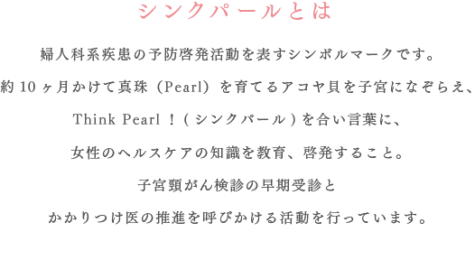
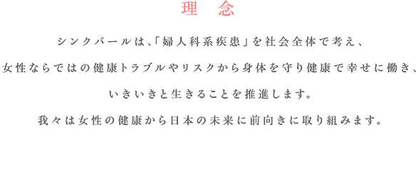
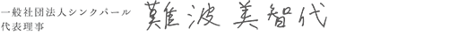

- 和文名称
- 一般社団法人シンクパール
- 英文名称
- Think Pearl Association
- 所在地
- 〒102-0083 東京都千代田区麹町4-5 KSビル 7階
- 代表理事
- 難波美智代
- 設立
- 平成24年9月3日
- 連絡先
- 電話：03-6893-8089 FAX：03-4333-0437 E-mail：info@thinkpearl.jp
- 目的
-
当法人は、日本経済の明日を担う女性の労働力拡大と QOL の実現の支援を目指し、特に女性の健康問題として心がけたい「婦人科系検診」の啓発と促進、また少子高齢化にも深刻な影響を及ぼす「子宮頸がん」の未然予防、患者支援を目的とし、 その目的に資するため、次の事業を行う。
1.婦人科検診受診促進を目的とした会員組織の運営
2.学術、文化、芸術、地域社会との振興を通した健康意識の向上
3.健康全般に関わる経済活動および活性健康、疾患の社会教育に関する調査、研究
4.前各号に附帯または関連する一切の業務 - 理事
-
難波 美智代 常勤 （一般社団法人シンクパール 代表理事）
森川 智貴 非常勤 （テック・メス・ライフ株式会社 代表取締役）
森下 千佳 常勤 （フリージャーナリスト） - 顧問
-
浅野 敬子 （にこにこ一般社団法人 代表理事）
小林 忠男 （大阪大学大学院医学系研究科 招聘教授）
武部 新 （衆議院議員 ・ がん教育推進議員連盟事務局長）
中川 恵一 （東京大学医学部付属病院放射線科准教授・厚生労働省がん対策推進企業アクション議長・文部科学省がん教育検討委員会委員）
野田 聖子 （衆議院議員 ・ 超党派乳がん子宮頸がん検診促進議員連盟 会長）
薬師寺みちよ （参議院議員・超党派乳がん子宮頸がん検診促進議員連盟 事務局長）
山崎 直子 （宇宙飛行士）
吉村 泰典 （内閣官房参与・慶應義塾大学名誉教授・元日本産科婦人科学会 理事長）平成29年6月15日現在 五十音順
※「シンクパール」および「女性からだ会議」は一般社団法人シンクパールの登録商標です。
私は、2009年10月に初期の子宮頸がんの告知を受けました。当時はまだ情報が少なく自分のあたまで病気を理解できるまでにとても時間がかかったことを覚えています。翌月の36歳の誕生日に病気のことをブログで綴ったところ、多くの励ましとともに「実は私も…」という女性たちからのメッセージが沢山届きました。知れば知るほど身近な病気であることに驚くとともに、デリケートな婦人科系疾患であるために、世の中に情報や教育が行き届きづらいことに問題意識を持ちました。女性たちがあたりまえに健康や病気のリスク知り、キャリアやライフプランを考える機会をつくりたいと、子宮全摘出手術間近の2009年12月にNPO法人を立ち上げました。2012年には、世界的な婦人科系疾患予防キャンペーン「The Pearl of Wisdom」と提携し、一般社団法人シンクパールとして定期的な検診とかかりつけ医の推進に取り組んでいます。現在、検診の受診率は先進国のなかでも最下位です。世界の取組みを日本人の価値観にあわせた方法で展開することにより、女性のみならず男性も病気を理解し、ひいては将来を担うすべてのいのちと女性がいきいきと過ごせる社会の実現を願います。
|  | |
|
東京都がん教育推進協議会委員 / 京都府小児・AYA世代がん等患者支援検討会委員 |